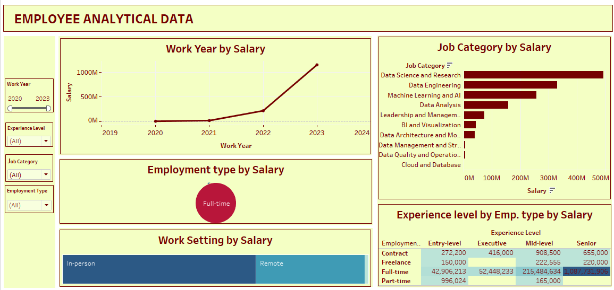
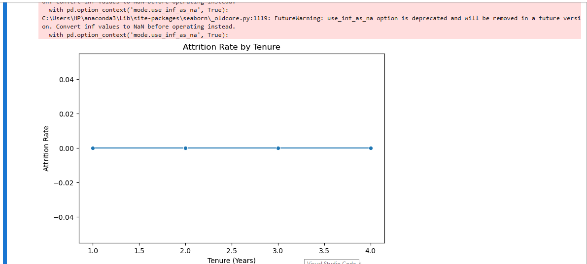
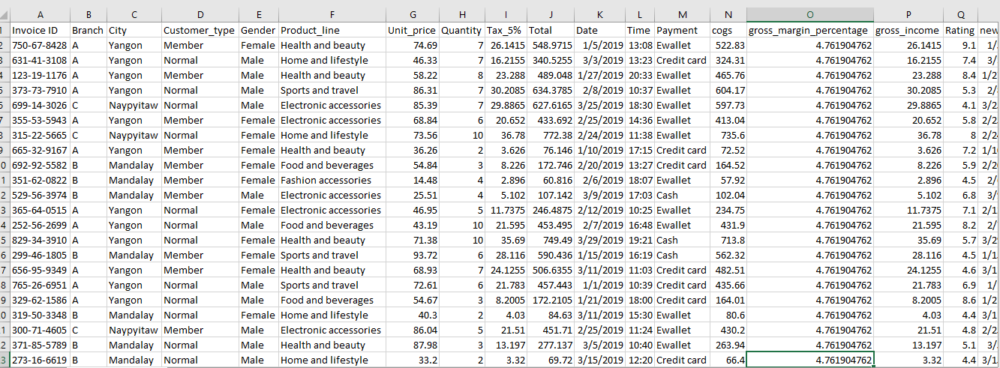
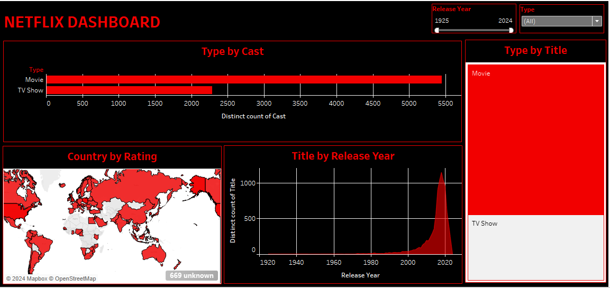

I am a Result-driven Data Analyst with over 3 years of comprehensive experience in data
integration, governance and Metadata management. Proficiency in leveragging analytical
skills and advanced tools such as SQL, Teradata and Tableau to deliver actionable insights.
Demonstrated expertise in SDLC phases, problem-solving and communication aimed at elevation
data accuracy and contribution to organizational success in dynamic environments.
PROJECTS
Sales Analysis and Forecasting
Project Objectives and Insights
This project aims to analyze and forecast sales data to uncover trends, customer behaviors, and product performance. The insights gained will help guide business decisions in marketing, inventory, customer service, and revenue optimization.
Key Findings
1. Seasonal sales trends and high-demand months were identified.
2. Certain product lines, especially Food and Beverages, drive profitability.
3. Diverse payment preferences were observed, with cash being most popular.
4. Variations in customer satisfaction suggest areas for improvement in product quality.
Recommendations
1. Boost Marketing in Peak Months: Focus marketing efforts during high-demand periods.
2. Promote Profitable Products: Increase focus on high-revenue products and improve lower-margin ones.
3. Enhance Loyalty Programs: Encourage Normal customers to convert to Members.
Data visualization with Tableau

Python Code

SQL Code

Forecast with Prophet Model
Project Objectives and Insights
This project aims to analyze employee performance data to identify key productivity drivers,
evaluate team effectiveness, and predict factors leading to attrition.
The insights will enable targeted retention strategies and performance improvement initiatives.
Key Findings
1. Performance and Salary: Higher compensation correlates with seniority and executive roles, while entry-level positions remain undercompensated.
2. Geographical Insights: Salaries differ significantly across regions, with Qatar showing the highest and Indonesia the lowest.
3. Tenure Dynamics: Shorter-tenure employees have higher average salaries, suggesting a competitive market or proactive hiring strategies.
Recommendations
1. Retention Strategies: Introduce competitive salaries for critical roles in lower-paying regions like Indonesia.
2. Geographical Expansion: Use insights to optimize hiring and engagement in underperforming regions.
3. Performance Monitoring: Leverage dashboards to track year-over-year salary and engagement metrics, aligning strategy with trends.

Data Visualization with Tableau

Model with Python

SQL Code

Data cleaning and preprocessing using Excel.
1. Handles various data types, including numerical, textual, and dates.
2. Fill missing values with the mean, median for numerical data.
3. Remove duplicate entries to avoid double-counting transactions.
Project Objectives and Insights
This report evaluates Netflix's data using SQL, Python, and Tableau to extract actionable insights.
The analysis covers trends in content addition,
seasonal and temporal patterns, retention rates, and distribution of content across genres and countries.
Key Findings
Netflix's strategies between 2015 and 2020 drove rapid expansion and content diversification. Seasonal trends indicate
optimal content release periods, and retention analysis suggests targeted engagement for older cohorts could improve churn rates.
The platform's focus appears to have shifted recently towards quality rather than quantity.
Recommendations
1. Targeted Retention Campaigns: Implement re-engagement strategies for older subscriber cohorts using personalized recommendations.
2. Strategic Content Release: Leverage high-engagement months (e.g., July, December) for major content drops.
3. Quality Over Quantity: Focus on creating high-quality original programming to maintain the brand's reputation and engage global audiences.

Data Visualization with Tableau

Data Visualization with Python

SQL Code